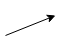

1. Introduction and Goals
DeChat is a messaging application such as WhatsApp, Line, or Telegram, but with the main difference that it is based in a decentralized architecture to work. This means, among other interesting features, that the data storage and the app are independent, so you decide where all your information is saved.
Even though it is a different approach to an existing technology, it implements the same features a user of a similar app would expect. Some of these features include:
-
Chats with one or more people.
-
Notifications (when being spoken, invited to a group chat…).
-
File sharing (image, video, gif…).
1.1. Requirements Overview
The requirements of the project are set by the teachers of the Software Architecture course and the people from Solid and Inrupt. They are the following:
-
Implement continuous integration (with Travis).
-
Keep a good quality code (between an A and a B, tracked with Codacy).
-
Have a test coverage of 60%-90% (tracked with Coveralls).
-
Definition and use of code conventions.
-
Message portability between other decentralized chat applications.
-
And all of these from the Course Guide and the Inrupt Challenge
1.2. Quality Goals
| Goal | Scenario |
|---|---|
Adaptability |
Personalization of the user interface to your like (Night mode, highlight contacts…). |
Availability |
Be able to use the app as long as there is internet connection and your POD is in a working Solid server. |
Modifiability |
The software can be easily updated, trimed and/or extended by the developers. |
Performance |
Low latency for working with the app (sending and receiving messages in a small time span, fast data load…). |
Portability |
Use the same app from either a web navigator, a native application installed in a computer or your mobile phone. |
Privacy |
Define which data which people can see and interact with. |
Scalability |
Support of a huge number of concurrent users. |
Security |
No malware compromises the private information of the users. |
Usability |
Following the standards from similar apps, the user will feel familiar and know how to use the app even without needing a manual. |
1.3. Stakeholders
Role/Name |
Contact |
Expectations |
Developers |
Daniel Villanueva, David González, Jonás Martínez, Juan Sánchez-Ocaña. |
The correct development and functioning of the application, accomplish the requirements from the course and the people at Solid. |
Teachers |
PhD José Emilio Labra Gayo |
A good project that we can show to the people at Solid and be proud, but also to pass the subject and learn how to work in the real world through the development process. |
Inrupt & Solid community |
Sir Tim Berners-Lee, Mitzi Laszlo |
A functional project for introducing to developers and users a new way of making projects in the web, far away from the current over-centralized model. |
End users |
People that use the app |
A functional, fast and safe app for chatting in a daily basis. |
2. Architecture Constraints
The constraints of the architecture of the app are divided in technical, organizational and political, and conventions:
| Constraint | Explanation |
|---|---|
Decentralized Architecture |
The data of the app is stored in several places in the world. |
Solid PODs |
The data structure developed by Solid is used to store the data. |
OS and browser independent |
In its native version the app works in all operating systems, and in its web version, in all browsers. |
Web application |
The application has a web interface. |
JavaScript |
The core of the application is implemented using JavaScript. |
JSON data format |
The data of the app is stored in the PODs using JSON files. |
Schema standards |
The storage of information follows the standards of Schema for being able to to use different apps with the same data. |
Variety of tests |
For the application’s core, load, acceptance, browser-based, usability, security… |
| Constraint | Explanation |
|---|---|
The team |
Daniel Villanueva, David González, Jonás Martínez, Juan Sánchez-Ocaña. |
Time schedule |
Start in late January and deliver the final version in late May/June. |
Version control |
A Git repository keeps a complete commit history and the participation of the members of the team. |
Test tracking |
Track the different tests of the app with CodeCov or Coveralls. Aim to achieve a sufficient code coverage. |
Behaviour Driven Development |
Design the application encouraging the collaboration between developers and non-technical participants of the project. |
MIT License |
The project contents are open source and published under the MIT License. |
| Constraint | Explanation |
|---|---|
Documentation |
Based in the arc42 template. |
Coding |
Use of the JavaScript coding conventions and enforce them through Codacy. |
Language |
Code and documentation is developed in English for our international audience. |
3. System Scope and Context
DeChat allows real-time peer-to-peer communication with a decentralized structure, which means:
-
Two or more people can exchange information between them without depending on a third person or entity.
-
Their data is never shared with anyone outside this direct communication channel.
3.1. Business Context
Communication is made via PODs: When a user sends a message to a contact, the message is written in the sender’s PODs, and then the message’s link is shared with whoever the writer has chosen. The data of the app is composed by the user’s information, plus the links to other user’s messages that their owner has given the first user access to.
In this example, each user has private messages to each other user, but also group messages to the other two.
3.2. Technical Context
The communication looks simple, but there are some things that have to be taken into account:
-
DeChat cannot access directly to the raw information of a POD, there has to be an interface that fetches the relevant data and sends it to the app.
-
Reading and writing in PODs has to be asynchronous for several reasons.
-
A message buffer/cache is important for a fast access to the most requested data.
Currently, the interface and the reading and writing of PODs are based in solid-file-client.
4. Solution Strategy
The JavaScript framework we have chosen. It provides web development using "components" and based in Model-View-Controller, facilitating the work for the interface and the services it has to provide.
Users log into their PODs through this service, already developed by Solid, open source, free to use and server independent.
Rather than accessing to the raw data of a POD, each of them implements an interface that handles the requests of the app. It allows writing the links between the PODs and retrieving their information regarding DeChat. It is based in RDFLib.
Data is stored and retrieved in/from the PODs using JSON-LD, a variant of JSON for Linked Data. We chose this for the familiarity we have with this format.
Manages the requests of the app to the user PODs, being able to hold them even when a POD is not available or busy managing other requests.
5. Building Block View
5.1. Scope & Context
Users can read and write messages using DeChat, which, through a user-friendly interface, manages the POD storage and the data linking of the user and its contacts.
| Item | Meaning |
|---|---|
User(s) of the app, source of all human interactions with the system. |
|

|
Interactions between entities, data structures or application blocks; flow of information. |
Solid POD server, a server which, among other things, can host user PODs. |
|
User’s POD, a data structure for any kind of information. In our case, messages. |
5.2. Level 1
The first level of the Building Block View is a overall glance at the main blocks of the app:
As the app is based in the Model-View-Controller structure, the purpose of the blocks is pretty clear in general lines. Nonetheless, there are details that need further explanation:
-
Model
-
Abstraction of the data structures needed for the app.
-
Serves for storage of the information fetched from the POD.
-
Is modified by the Controller and modifies the visual components of the View.
-
-
View
-
Form of interaction with the app for the users.
-
Provides ways of interacting with complex components in a user-friendly way.
-
Is modified by the Model and interacts with the Controller to get things done.
-
-
Controller
-
"Brain" of the app, knows what to do and how in order to perform several user operations
-
Is formed by services, libraries and methods to work with either POD, user or app data.
-
Is told by the View to perform actions and their results are reflected in the Model.
-
5.3. Level 2
And at level 2, a view of the components and ths services
-
Model: Storage of the contacts, chats, friends and messages of the user without being parsed into a html element.
-
contact.model.ts
-
chat.model.ts
-
friend.model.ts
-
message.model.ts
-
-
View: Visual representation of the elements once parsed into html components
-
Contact List View
-
Chat View
-
Friend List View
-
Message View
-
Login View
-
-
Controller:
-
contact.service: For parsing the contacts from the model into html.
-
rdf.service: For writing and reading from the contents of the PODs.
-
solid.auth.service: For session handling management.
-
6. Runtime View
The order of interaction between the different blocks of the application is from top to bottom, so the first interactions to be executed are the top ones.
6.1. Login & Reading Messages
Initially, the app shows a login screen with fields for introducing your POD provides and your credentials.
Once the user is logged in successfully, in case it’s the first time using DeChat, the app will create the needed folders for the data storage. Otherwise, the messages will be read from the POD and parsed into their corresponding models. Then, the contacts and messages are displayed and the user can work with the app as they wish.
6.2. Making new chats & Writing Messages
In case a user wants to make a new chat, they have to click on "New chat", choose the contacts that they want to chat with and click "Next".
Then the controller will create the neccessary files and folders on each of the chat participant’s PODs, update the model with the new information (contact list and chat view), and show a new empty chat to the user.
Now, for sending a message, the user writes its contents in the message window and clicks on the "Send" button.
This way the view will tell the controller to create the corresponding message file in their POD, link it to the contact’s PODs and write a notification. Then the models are updated and the views in consequence, showing the message in both DeChat applications.
7. Deployment View
Node/Artifact |
Description |
DeChat development platform(s) |
The computers from the members of the team, standard machines with the needed software and internet connection. |
Web browser |
A standard web browser to access the application. |
GitHub server |
Repository for the code, documentation, and deployment. |
Code repository |
Cloud copy of the source code for several reasons. |
Docker |
Code container software providing everything the application needs for running properly. |
GitHub page |
Deployment of the app in the GitHub server. |
Documentation page |
Deployment of the documentation of the app in the GitHub server. |
Solid server |
Any server prepared for POD storage. |
User POD |
Personal data storage prepared for working with decentralized applications. |
8. Cross-cutting Concepts
8.1. Domain Concepts
Entity |
Description |
User |
The person using the application |
Friend |
Person tagged as 'knows' in the POD, can become also a contact. |
Contact |
Friend that the user have chats with. |
Message |
String, link, video or audio. |
Chat |
Set of messages between two contacts. |
Group Chat |
Chat but for three or more contacts. |
8.2. User Experience Concepts
8.2.1. User interface
DeChat has a web interface with a side-menu that allows users to view their chats with contacts (including groups) and a contact list. These two can be searched for specific results using their respective filter button. The side menu also has a button to change the chat settings and a button to create new group chats. The application has a chat view too, for reading and writing messages to other users.
It’s a Single Page Application written in JavaScript using Angular JS.
8.2.2. Internationalization (i18n)
Initially we had planned to internationalize the user interface of the application, but we ended up short of time so we did not do it. Nevertheless, there are no components other than strings, so the development process should be fairly easy.
8.3. Safety & Security Concepts
8.3.1. Safety
The parts of the system that have life endangering aspects inherit from the bases of P2P computing. In case someone tried to reach dangerous goals with DeChat, we can’t respond for the misuse of the software.
8.3.2. Security
The security of the user credentials depends on the user’s pc and web browser, and in the strength of the Solid session manager.
In a P2P system, the only data leak that could be made depends on the human factor of sharing something unintentionally.
8.4. Architecture & Design Patterns
The user interface is based in Angular, and the work methodology of Angular is based on this pattern.
8.5. Under-the-hood
8.5.1. Persistency
All user data is stored in their POD through the solid-file-client library.
8.5.2. Transaction Handling
There is no sort of rollback for preventing unfinished transactions implemented yet.
8.5.3. Session Handling
The management of the session is made with solid-file-client.
8.5.4. Reporting
Bugs, ideas, recommendations and anything else can be made through the issues page of the GitHub project, following the standards for opening an issue.
8.6. Development Concepts
8.6.1. Configurability
There is no way of configuring the application to your like yet (other than changing the source code by yourself and recompiling the application).
8.6.2. Testing
The following tests are implemented:
-
Acceptance tests: Written in Gherkin, using Protractor-Cucumber.
-
Browser-Based tests: Developed using Selenium.
-
Load tests: Using Gatling.
-
Monitoring & Profiling: With Google Chrome DevTools.
8.6.3. Profiling
During the profiling operation in Google Chrome using DevTools with an slowed processor it was noted that the most time consuming step in the application is the script evaluation. Therefore, it should be the first to look at when optimizing the application.
8.7. Operational Concepts
8.7.1. Disaster-Recovery
The data of the application is stored in servers independent from the app, so the responsibility of making backups from the PODs from time to time resides in the server’s managers. Users can make backups of their PODs into their PCs whenever they want. If your Solid POD server falls, there are more to work with, so even if you lose your information you can use the app from other server.
The recovery is dependant of GitHub. If anything happens to their servers the application would be down until they manage the disaster.
8.7.2. Scalability
Initially, the scalability issues we could have were solved.
8.7.3. High Availability
Once a new version of the app is made, the only time it takes is from merging the new contents from the development branch with the master branch. Once that process is completed, refreshing the web should show the new features.
As long as GitHub and a Solid server work, there is not such a thing as a "downtime" and you can use the app freely.
|
Warning
|
Notice that your chats, contacts and such will be lost if the Solid server from the provider of your POD gets destroyed or something similar. Making a new POD in a different server allows you to use the app, but you will need to make new friends and contacts. |
9. Design Decisions
The following table represents the design decisions sorted from most to less important:
| Section | Definition | Rationale |
|---|---|---|
Frontend |
Use AngularJS for the user interface |
Angular offers an easy way of working with the components of complex user interfaces. As some members of the team were familiar with it and others were neither familiar with JS or Angular, we chose to learn and use Angular (and JS by extension) over learning and using plain JavaScript. |
Backend |
Use Typescript for the core of the application |
As the project is based in Angular, we chose to use Typescript over plain JavaScript for development conveniences. |
Library |
Use of solid-auth-client |
Rather than implementing a whole login system for the app, we used an oficial library for it. |
Library |
Use of solid-file-client |
We were not very successful using RDFLib for writing and reading in the PODs, so we discarded it and tried with this library. |
RDF |
Plain JSON for storage |
Initially, we would use JSON-LD to write in the POD, but it seemed like a too difficult task, so we ended up working with a plain (and very unconvenient for a lot of things) version. |
RDF |
Namespace convention from Schema |
Rather than inventing a new one and probably be a failure, we took the namespaces from this organization. |
Testing |
Use of Cucumber for testing |
We chose to use Cucumber over Karma because we would not be able to make the tests from the new requirements otherwise. |
Documentation |
Use the arc42 template for the documentation (AsciiDoc) |
We chose arc42 over other documentation models because of the recomendations of the teachers of the course. |
Library |
Use (and discard) of WebRTC |
Initially, the WebRTC technology would help the app retain the petitions to the unreachable PODs until they were available, but then we realized that in the current computing paradigm PODs are stored only on servers, so they should never be unavailable. |
Testing |
Use (and discard) of Karma |
Our tests were initially automated using Karma, later on it was supplanted by Cucumber. |
Frontend |
Solid-like color palette |
As we work in a Solid "product", we chose to make the app look familiar to the original project: a mix of purple, blue and white colors. |
10. Quality Requirements
10.1. Quality Tree
The following diagram represents the quality attributes and their scenarios, sorted by priority from top (highest priority) to bottom (lowest priority):
10.2. Quality Scenarios
Sorted by type, the following tables explain the quality scenarios from the quality tree.
Scenario |
Concretization |
Priority [1] |
App feels familiar to the users |
When users see the interface, the knowledge from using similar applications in the past helps them using DeChat |
High, Medium |
Standard display of elements |
Users have interface components where they would expect them to be |
High, Medium |
Smart interface design |
The usability tests of the app changed their fashion, adjusting it for a better working time |
High, High |
Accesibility standards |
A mouse is not needed to use the app, and the color codes are not prohibitive for users with visual impairments |
Medium, Medium |
Cool-looking colors and elements |
Interface has a good looking style with a Solid-like color palette, which altogether invites you to use it |
Low, Low |
Scenario |
Concretization |
Priority [1] |
Data can’t be intercepted by unrelated entities |
While two users are chatting, nobody other than those two people is able to get that information |
High, Medium |
The data of the app is decentralized |
Data remains safe if the server hosting the app falls |
High, High |
Users choose where to store their data |
From an official Solid server to your own personal computer, you choose where to save the application’s data |
High, High |
Scenario |
Concretization |
Priority [1] |
Interactions with the UI are reflected within a reasonable time |
The UI shows feedback from your actions fast (e.g. sending a message an seeing automatically in your chat) |
Medium, Medium |
The new data is shown in the partner’s chat within a reasonable time* |
Once a message is sent, it should not take more than 1-2 seconds to be seen in the UI of your chat partner |
Medium, Low |
The system has no downtime and is available in their web always |
Updates are automatic, do not take user time, and the app is available as long as the server does not crash |
Medium, Low |
The loading of information does not leave the system unavailable for more than 5 seconds |
Loading big chunks of data (chats, messages, contacts…), specially when you log in, puts the system in a "waiting to use" scenario that has to be minimal |
Medium, Medium |
Scenario |
Concretization |
Priority [1] |
Work methodologies are clear |
Developers can check the documentation to know how to work in the project |
Medium, Low |
Project’s architecture and module’s purposes are clear and coherent |
Developers can check the documentation to know where to work in the project |
Medium, Low |
Different tools and technologies are implemented for the different test cases |
Having the test setup already prepared eases the testing process, having only to develop the cases |
Medium, Medium |
11. Risks and Technical Debts
The Solid project introduces new concepts, technologies and information that we have never worked with. We have to learn how to manage them by ourselves, without many documentation or examples.
Investigation, research, spending time on it and asking for assistance to the Solid community are our best bets.
Some of us have never worked with JavaScript, TypeScript or Angular. This brings in a new programming language we have to face, learn and master. Also, even though the framework provides good tools, it also adds complexity to these tasks.
Tutorials, documentation reading and spending time on it are the way to go.
The RDF intrigures add new data organization concepts that some members of the team are not used to.
Work and advice from the most experimented members in this matter is the best thing to do.
Developing architectures before fully learning about them is a challenge. Our design will probably be less optimal than it should, and it could also drag down app functionalities.
The only thing we can do about it is try, learn from the failures and patch them the best we can or start from scratch.
Arc42 is a good documentation template, but learning about the new different things we have to develop in it is a challenging task.
Doing research and learning with internet examples are the way to succeed in this job.
Part of the course includes several new kinds of project tests, which mean new tools, programming lenguages, configuration logistics and concepts.
We have to get used to all this new information and spend time working on the different test in order to overcome this challenge.
More people working on a project does not always mean a better final product or less work by developer. Being several people in the team adds complexity to task distribution and group organization.
The members of the team are expected to work independently, look for things to do when they are done working in something, and to be eager to communicate with the other members.
12. Glossary
| Term | Definition |
|---|---|
Angular |
Typescript-based open-source web application framework for an easier development of single-page applications. |
Asynchronous (Asynchrony) |
Regarding computer programing, refers to the occurrence of events independent of the main program flow and the ways to deal with them. |
Codacy |
Code analysis tool for identifying automatically security issues, code duplication, code complexity and more. |
Cucumber |
Testing tool for Behaviour-Driven development that runs acceptance tests automatically. |
Decentralized (Decentralization) |
Allocation of hardware and software resources through several places. Currently, refers to an alternative model to the nowadays frequent mass hoarding of data from big firms. |
Docker |
Tool that provides container software includying everything needed to run an application: code, libraries, settings… |
Gherkin |
Language for defining Cucumber test cases. |
Git |
Distributed version-control system for tracking changes in source code during software development. |
Interface |
Shared boundary between two or more separate components of a computer system for exchanging information. |
Jasmine |
Unit test framework for checking the correct behaviour of the lowest level features. |
JavaScript (JS) |
High-level, interpreted programming language. One of the core technologies of the World Wide Web that enables interactive web pages and is an essential part of web applications. Used by the vast majority of websites. |
JSON (JavaScript Object Notation) |
Lightweight data-interchange format based on attribute-value pairs. Easy for humans to read and write and easy for machines to parse and generate. |
JSON-LD (JSON for Linked Data) |
Variant of JSON for encoding Linked Data. |
Karma |
Test runner for tests written with Jasmine. |
Model-view-controller |
Architectural pattern used for developing user interfaces. |
Native app |
Software program developed for using it on a particular platform or device. |
Peer-to-peer (P2P) |
Distributed application architecture that partitions tasks or workloads between peers. |
POD (Personal Online Data Store) |
Data structure hosted wherever its owner desires used for storing personal data. |
RDF (Resource Description Framework) |
Family of W3C specifications for a metadata data model. It is used for the modeling of information that is implemented in web resources. |
RDFLib |
Library for JS which easies the work with RDF. |
Schema |
Shared vocabulary to structure data markup in websites. |
Service |
Software functionality with a purpose that different clients can reuse. |
Solid |
Web decentralization project led by Tim Berners-Lee. Aims to change the way Web applications work nowadays, resulting in true data ownership and improving privacy. |
Stakeholder |
Person that has an interest in a project or company and can either affect or be affected by their business. |
Travis |
Hosted, distributed continuous integration service used to build and test software projects. |
TypeScript |
Superset of JavaScript that adds optional static typing to the language. |
URI (Uniform Resource Identifier) |
String of characters that unambiguosly identifies a particular resource. |
Web App |
Client–server computer program where the client runs in a web browser. |
WebRTC (Web Real-Time Communication) |
Free, open-source project that provides web browsers and mobile applications with real-time communication via simple application programming interfaces. |
13. About arc42
arc42, the Template for documentation of software and system architecture.
By Dr. Gernot Starke, Dr. Peter Hruschka and contributors.
Template Revision: 7.0 EN (based on asciidoc), January 2017
© We acknowledge that this document uses material from the arc 42 architecture template, http://www.arc42.de. Created by Dr. Peter Hruschka & Dr. Gernot Starke.